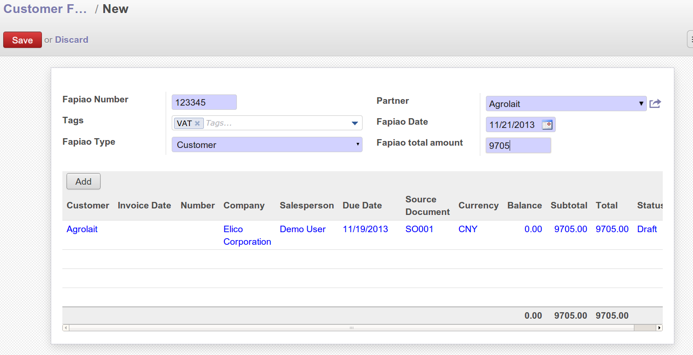

l10n_cn_fapiao module
Fapiao Management and link with Odoo Invoice
"Fapiao" is an official invoice in China, printed with a separate official
software. This module allows the users to manage all emitted and received
"fapiao" as object in Odoo. A new submenu called Fapiao is added under the
menu Accounting.
The procedure to follow for the fapiao management is as below:
- 1: A fapiao is received or emitted
- 2: The document can be scanned as image
- 3: A new fapiao is created in Odoo
- 4: The scanned document is uploaded to the newly created object as attachment.
- 5: Fapiao allocation to invoice: Fapiao and Odoo invoices can be linked to each other
